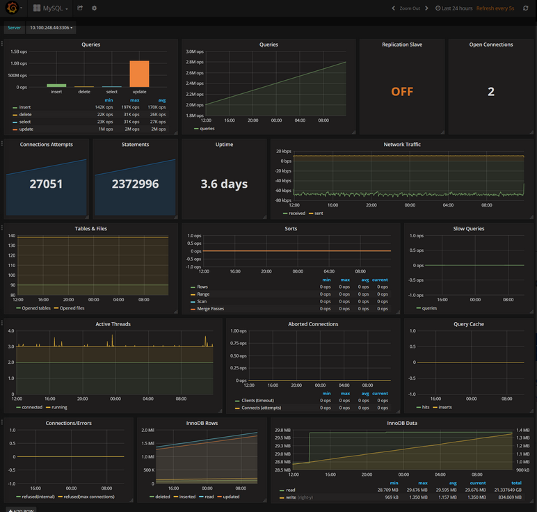

Area de almacenamiento para guardar en memoria cache, log de transacciones, indices, etc
Esta área es flusheada según cierto tiempo o si son modificados los datos que mantenía
Cuantas instancias de buffer en el pool se ocupan se configura con la variable innodb_buffer_pool_instances (Demasiadas instancias puede ocacionar problemas de memoria)
Cada base de datos toma cierto tiempo en construir este buffer, así que pruebas recién encendido el servidor pueden dar resultados poco realistas
Funcionalidad que predice según las páginas que has consultado, las posibles siguientes páginas y las mantiene en memoria para acelerar su acceso en caso de ser utilizado
Puede usar el algoritmo lineal (default) o el random y se modifican o monitorea su funcionamiento con estas variables:
Qué tan seguido se detona esta funcionalidad puede ser configurada con estas variables:
En caso de reiniciar el servidor, el buffer guardará un dump de las páginas usadas según esta variable: innodb_buffer_pool_dump_pct
Para activar o desactivar esta funcionalidad se usan estas variables: innodb_buffer_pool_dump_at_shutdown y innodb-buffer-pool-load-at-startup
o manualmente con innodb_buffer_pool_dump_now y innodb_buffer_pool_load_now
Monitorea el status del buffer con Innodb_buffer_pool_dump_status o haciendo consultas a performance_schema
explica cómo manejará la declaración, incluido cómo unirse a la tabla y en qué orden unirse a la tabla.
possible_keys: el nombre del índice que puede estar disponible.
keymuestra el nombre del índice realmente utilizado por mysql. Si está vacío (o es nulo), MySQL no usa el índice.
rows: el número de registros que MySQL cree que debe escanear antes de encontrar el resultado correcto. Obviamente, el número ideal aquí es 1.
dentro de la consola de Mysql correr: show global status
En el shell del server correr: mysqladmin ext -r -i60 -c3
SELECT TABLE_NAME FROM INFORMATION_SCHEMA.TABLES
WHERE TABLE_SCHEMA = 'performance_schema';
podemos obtener tiempos promedio de ejecusión para los distintos tipos de operaciones
Las características de monitoreo que ofrece MySQL funcionan bien para verificaciones rápidas y únicas. Pero cuando necesite un monitoreo continuo en tiempo real de una base de datos de producción, estas características integradas y funcionalidades básicas simplemente no serán suficientes.
Workbench nos permitirá analizar y visualizar estas métricas más fácilmente
Visualizador de métricas
Optimizador de Queries y monitor usando AI
Panel de Monitoreo para DBS
Monitor de SQL